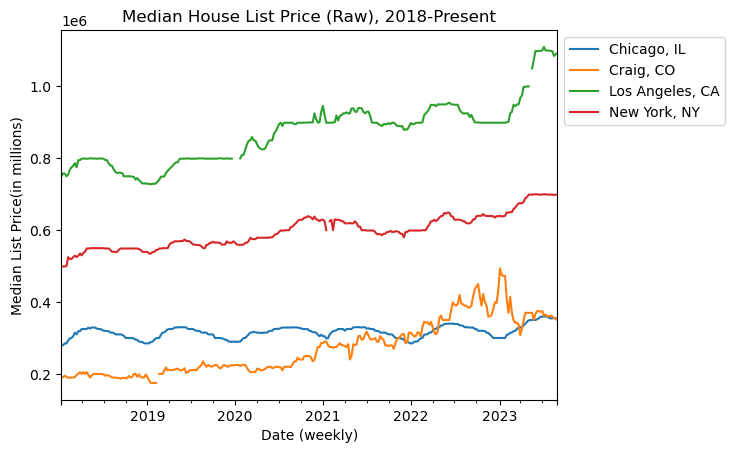
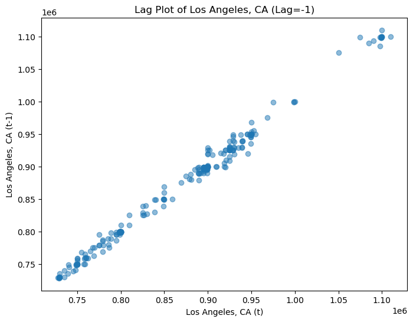
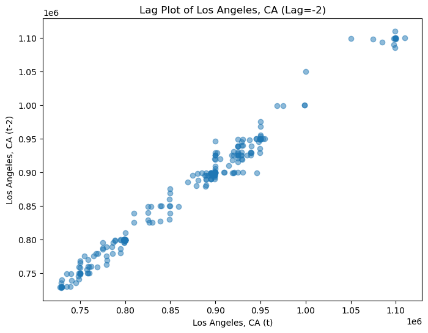
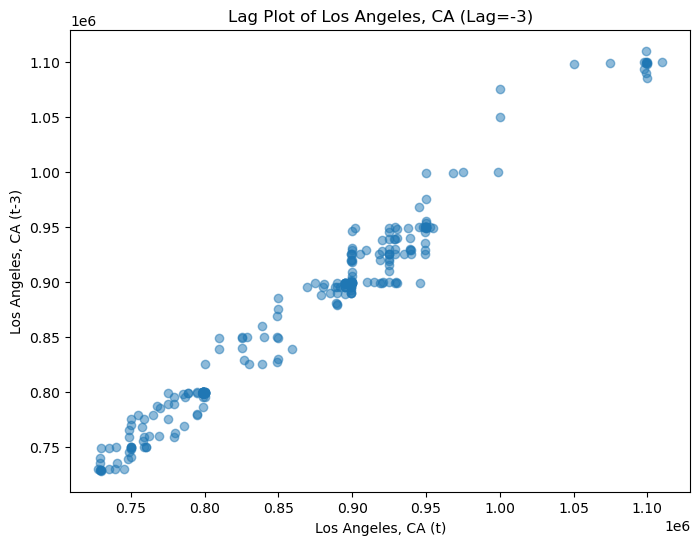
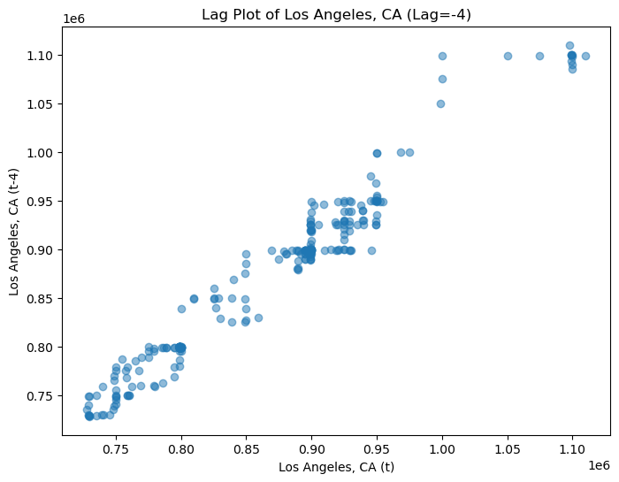
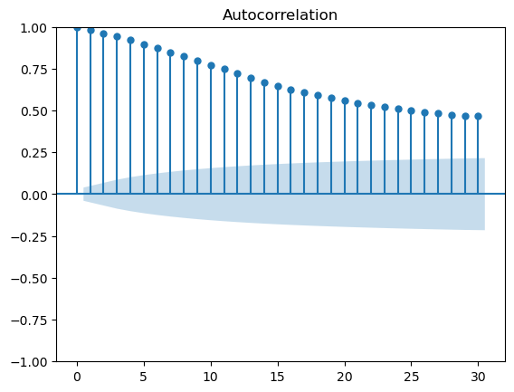

# Problem Set 01
1. Name: Charavee Basnet Chettri
1. Field that you're interested in applying TS and forecasting to (ecology, econ, weather, etc): econ, ecologySyntaxError: unterminated string literal (detected at line 3) (1272513780.py, line 3)# Problem Set 01
1. Name: Charavee Basnet Chettri
1. Field that you're interested in applying TS and forecasting to (ecology, econ, weather, etc): econ, ecologySyntaxError: unterminated string literal (detected at line 3) (1272513780.py, line 3).csv file of time series data relating to any topic: ecological, financial, etc.import pandas as pd
## data manipulation
data = pd.read_csv("mlp_week.csv")
data_drop = data.drop(columns=['RegionID', 'RegionType', 'StateName'])
#pivoting data so that dates are in rows
data_long = pd.melt (data_drop,
id_vars=['SizeRank','RegionName'],
var_name= 'date',
value_name= 'md_lp')
#turn dates into datetime objects and set them as index
data_long['Date'] = pd.to_datetime(data_long['date'])
data_long.set_index('Date', inplace=True)
data_filtered = data_long[(data_long['SizeRank'] == 1) |
(data_long['SizeRank'] == 2) |
(data_long['SizeRank'] == 3) |
(data_long['SizeRank'] == 937)]
#pivot so that each variable is a city, state
data_wide = data_filtered.pivot(index = None,
columns = 'RegionName',
values = 'md_lp')data_wide.plot()
plt.title('Median House List Price (Raw), 2018-Present')
plt.xlabel('Date (weekly)')
plt.ylabel('Median List Price(in millions)')
plt.legend(loc='upper left', bbox_to_anchor=(1, 1))<matplotlib.legend.Legend at 0x1646d1f90>
#1 week past lag
var = 'Los Angeles, CA'
lag = -1
data_wide['lagged'] = data_wide[var].shift(lag)
# Create a lag plot
plt.figure(figsize=(8, 6))
plt.scatter(data_wide[var], data_wide['lagged'], alpha=0.5)
plt.title(f'Lag Plot of {var} (Lag={lag})')=
plt.xlabel(f'{var} (t)')
plt.ylabel(f'{var} (t{lag})')
plt.show()
#2 week past lag
var = 'Los Angeles, CA'
lag = -2
data_wide['lagged'] = data_wide[var].shift(lag)
# Create a lag plot
plt.figure(figsize=(8, 6))
plt.scatter(data_wide[var], data_wide['lagged'], alpha=0.5)
plt.title(f'Lag Plot of {var} (Lag={lag})')
plt.xlabel(f'{var} (t)')
plt.ylabel(f'{var} (t{lag})')
plt.show()
#4 week past lag
var = 'Los Angeles, CA'
lag = -3
data_wide['lagged'] = data_wide[var].shift(lag)
# Create a lag plot
plt.figure(figsize=(8, 6))
plt.scatter(data_wide[var], data_wide['lagged'], alpha=0.5)
plt.title(f'Lag Plot of {var} (Lag={lag})')
plt.xlabel(f'{var} (t)')
plt.ylabel(f'{var} (t{lag})')
plt.show()
#4 week past lag
var = 'Los Angeles, CA'
lag = -4
data_wide['lagged'] = data_wide[var].shift(lag)
# Create a lag plot
plt.figure(figsize=(8, 6))
plt.scatter(data_wide[var], data_wide['lagged'], alpha=0.5)
plt.title(f'Lag Plot of {var} (Lag={lag})')
plt.xlabel(f'{var} (t)')
plt.ylabel(f'{var} (t{lag})')
plt.show()
#plt.figure(figsize=(8, 6))
plot_acf(data_wide['Los Angeles, CA'].dropna(), alpha=0.5, lags=30)
plt.show()